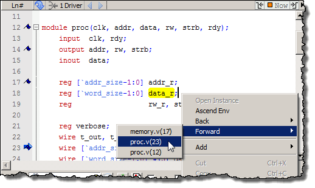

When debugging
your design from within the GUI, Questa SIM keeps
a log of all areas of the design environment you have examined or
opened, similar to the functionality in most web browsers. This
log allows you to easily navigate through your design hierarchy,
returning to previous views and contexts for debugging purposes.
Procedure
- Select then right-click an
instance name in a source document.
- Select one of the following
options:
Open Instance — changes
your context to the instance you have selected within the source
file. This is not available if you have not placed your cursor in,
or highlighted the name of, an instance within your source file.
If any ambiguities exist, most
likely due to generate statements, this option opens a dialog box
allowing you to choose from all available instances.
Ascend Env —
changes your context to the next level up within the design. This
is not available if you are at the top-level of your design.
Back/Forward —
allows you to change to previously selected contexts. Questa saves
up to 50 context locations. This is not available if you have not
changed your context. (Figure 1):
Figure 1. Setting Context from Source Files
Note: The Open
Instance option is essentially executing an environment command
to change your context. Therefore any time you use this command
manually at the command prompt, that information is also saved for
use with the Back/Forward options.